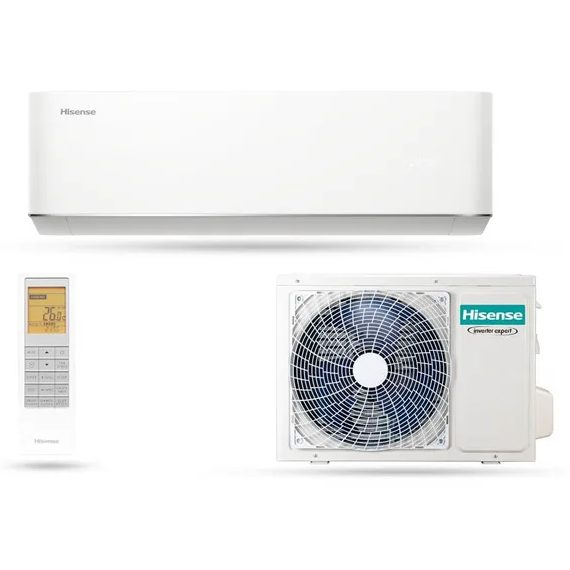

Felszerelve 351 950 Ft: a gép, a telepítés munkadíja és 3 méter hűtőköri cső egy összegben. Mi szereljük is fel, ezért itt az áll, amit egy adatlapról nem tudsz meg: mekkora szobába való, mi van az árban és mi nincs, és mire figyelünk panelban vagy régi téglaházban.
Géppel és szereléssel, 3 fm csőig. Tájékoztató ár, a pontosat a felmérés után mondjuk meg.

A 3,5 kW hűtőteljesítmény a közepes nappali fokozata. Hogy a te szobádba elég-e, az nem csak az alapterületen múlik: a tájolás, az üvegfelület, a belmagasság és az, hogy mi van a szoba fölött, akár egy fokozattal feljebb tolja az igényt. A számok a saját méretezőnk küszöbei, tehát ha ott végigmész a kérdéseken, ugyanezt kapod.
Ha a szobád kisebb az alsó határnál, ne ezt vedd: a túl nagy gép pillanatok alatt lehűti a levegőt, leáll, a meleg falak visszamelegítik a szobát, újraindul, és közben a párát sem viszi el. Ha nagyobb, a gép egész délután maximumon jár, és az a legdrágább üzem. Mindkettőre van másik fokozat a készletben.
Egy összeg, a gép és a szerelés együtt. A telepítés munkadíja fix, 90 000 Ft, és ez a gép árához jön hozzá. A telepítés 3 folyóméter csővezetékig szól, felette 15 000 Ft folyóméterenként. A végösszegben ez van benne:
Ezekre nincs kiírt árunk, mert lakásonként más. A felmérésen mondunk rá pontos számot, előre, nem a munka végén. A felár-tételek részletesen az árak lapon.
A katalógusunkban ez a gép fűtésre optimalizált: -22 °C kültéri hőmérsékletig fűt, a fűtőteljesítménye 3,8 kW, a fűtési hatásfoka (SCOP) 4,1. A SCOP azt mondja meg, hány egységnyi hőt mozgat a gép egy egységnyi áramból, egy egész fűtési szezon átlagában; a mai gépeknél ez jellemzően 4 körül van.
Amit a szám nem mond el: a klíma az adott helyiséget fűti, nem az egész lakást. Átmeneti időszakban, tavasszal és ősszel ez pont elég, és ilyenkor a leghatékonyabb. Nagy hidegben csökken a hatásfoka, és fagypont körül időnként leolvaszt, ilyenkor pár percre nem fűt. A legtöbb budapesti lakásban a klíma és a gázkazán együtt a jó megoldás: a klíma viszi az átmeneti szezont, a kazán a mély telet.
Mikor olcsóbb klímával fűteni, mint gázzalA beltéri egység hangteljesítménye 58 dB az uniós energiacímke szerint. Ez a teljes kibocsátást leíró szám, nem a hirdetésekben kiemelt csendes fokozaté, ezért mindig nagyobb, mint amit egy prospektusban látsz. Két gép decibel-értékét csak akkor érdemes összevetni, ha ugyanabból a mértékegységből és ugyanarról a fokozatról származik.
Hálószobába ez a méret ritkán kell: a legtöbb hálószobába a 2,5 kW-os fokozat való, és ott nem a teljesítmény dönt, hanem a zaj. Ha a gép a szobához képest nagy, kapkod; ha kicsi, éjjel nem tud a halk fokozaton maradni. A kültéri egység zaja a szomszédé: a felmérésen úgy választjuk a helyét, hogy a rezgést gumibak fogja, és a kifúvás ne ablakra menjen.
Mit jelent a decibel a gyakorlatbanHa bizonytalan vagy, a felmérésen döntjük el, ingyen. Ott azt is látjuk, amire online nem kérdezünk rá.
Teljes műszaki adatlap, hivatalos uniós energiacímke-adatokból. Ami nincs a katalógusunkban, az itt sem jelenik meg.
Funkciók: Halk üzemmód, Alvási programok, UV-C légtisztítás, Automata öntisztítás, Párátlanítás, I Feel, Szupergyors hűtés és fűtés, Időzítő, Tálcafűtés, Kijelző elsötétítés, Automata újraindulás.
279 900 Ft felszerelve. Fűtésre is, -15 °C-ig.
355 000 Ft 328 000 Ft felszerelve. Fűtésre is, -25 °C-ig.
Akció november 19-éig, készlet erejéig. Az elmúlt 30 nap legalacsonyabb ára: 355 000 Ft.
365 000 Ft felszerelve. Fűtésre is, -15 °C-ig.
452 800 Ft felszerelve. Fűtésre is, -15 °C-ig.
Szűrhető méretre, fűtésre és márkára, felszerelt árral és teljes adatlappal.
351 950 Ft. Ebben a gép és a telepítés munkadíja is benne van, 3 méter hűtőköri csővel. Ami ezen felül jöhet (hosszabb cső, nehezen elérhető kültéri hely, vésés, külön áramkör, állványozás), azt a felmérésen tételesen megmondjuk, mielőtt igent mondasz. Az ár tájékoztató jellegű, a pontosat a felmérés után írásban kapod meg.
Átlagos adottságú szobába 29-39 m². Déli, tetőtéri vagy szigeteletlen szobánál 25-34 m², 3,5 méter feletti belmagasságnál 21-28 m². Ezek a saját méretezőnk küszöbei; a pontos méretet a felmérésen nézzük meg, mert az üvegfelületet és a szigetelést ott látjuk.
Igen, -22 °C kültéri hőmérsékletig, a fűtőteljesítménye 3,8 kW. A klíma az adott helyiséget fűti, nem az egész lakást; átmeneti időszakban a leghatékonyabb, nagy hidegben csökken a hatásfoka. A legtöbb budapesti lakásban a klíma és a gázkazán együtt a jó megoldás.
Hatósági engedély a lakásklímához általában nem kell, a ház hozzájárulása viszont igen: a homlokzat közös tulajdon, ezért a kültéri egység kihelyezéséhez írásos hozzájárulás szükséges. Hogy ehhez közgyűlési határozat kell, vagy elég a közös képviselő nyilatkozata, azt a ház alapító okirata és szervezeti-működési szabályzata dönti el.
Egy szokványos telepítés fél napos munka. Panelben tovább tart, mert a vasalatot be kell mérni, és a betont lassabb fúrni; egy átlagos panellakásnál így is egy napon belül kész, a beüzemeléssel együtt.
A szerelésre minimum három év: a csövezésre, a rögzítésre, a kondenzvíz-elvezetésre és a beüzemelésre. A gépre a katalógusunk szerint 3 év garancia jár, ennek a feltételeit a gép papírjai tartalmazzák.
A méretező eredménye és a válaszaid maguktól bekerülnek, nem kell újra beírnod. Visszahívunk, és egyeztetjük, mikor jövünk.
Ezt a klímaberendezést kéred: .
Miért nem elég a négyzetméter a klíma méretezéséhez, mit jelent a 2,5, a 3,5 és az 5 kW.
Lehet-e panelbe klímát szerelni, hol fut a vasalat a falban, mit kér a ház.
Mikor olcsóbb a klíma, mint a gáz, és mit tud a gép nagy hidegben.
Ingyenes kiszállás és felmérés, három év garancia a szerelésre.